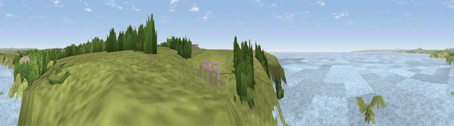

Viewpoint near Mullion
#11384 in England · top 26% of its area beats it · near MullionWhere it is
The exact computed spot (SW 66475 17375). Click the marker for map links.
The view, rendered

A 360° render of this exact spot computed from the terrain model, tree cover and land cover — summer colours, afternoon light, calibrated against photographs of famous viewpoints. Real trees, hedges and buildings will differ in detail.
The panorama
Grey silhouette: terrain skyline in each direction (720 bearings, Earth curvature and refraction included). Dashed green: skyline with trees (+15 m) and buildings (+8 m) as obstacles. Blue strip: how far the ground is visible on each bearing.
Where the view opens
Wedge length = distance to the farthest visible ground on that bearing (vegetation-aware). Rings at 10, 25 and 50 km.
What fills the view
73% water · 20% grassland · 5% woodland · 1% cropland ·
Angular shares of the visible panorama (visual magnitude), not map area. Landscape diversity 0.34 (0–1 Shannon).
Key numbers
More beautiful places nearby
The staircase of upgrades: each row has a higher view potential than everything closer. Driving times are estimates from straight-line distance, calibrated against real road routing — check an actual route before setting out.
| Place | Direction | Drive | Score |
|---|---|---|---|
| Viewpoint near Mullion | SSW · 1 km | ~3 min | 72.7 |
| Viewpoint near Ashton | NNW · 13 km | ~24 min | 81.3 |
| Tregonning Hill | NNW · 14 km | ~26 min | 83.0 |
| Rosewall Hill | NW · 28 km | ~45 min | 88.0 |
| Viewpoint near Combe Martin | NNE · 160 km | ~182 min | 88.9 |
| Holdstone Hill | NE · 161 km | ~183 min | 90.2 |
| The Knoll | ENE · 199 km | ~218 min | 91.0 |
50.01067, -5.26074 · source: screening · position refined by local search. Computed location — check access rights before visiting.